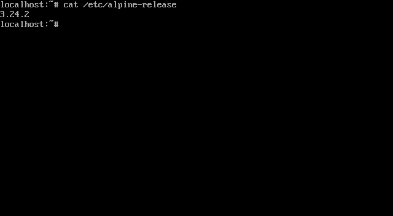

Why Alpine Linux?
- A compact base for utility machines, servers, containers and learning.
- apk packages and OpenRC services keep configuration hands-on.
- Diskless, data and system installation modes offer different persistence choices.
OPERATING SYSTEM / INDEPENDENT LINUX
A small Linux base built around musl and BusyBox. Pick an edition for your use, then the architecture of the machine that will run it.
SEE IT RUN
Alpine Linux 3.24.2 Standard starts in a plain terminal: no desktop, a few seconds to a prompt. The recording runs three commands in a ROMinit test VM.
cat /etc/alpine-releaserelease numberuname -rmkernel and CPUapk --versionpackage managerAlpine website ↗ Add a desktop ↗ YouTube demo ↗
The video is an older community walkthrough (Trafotin, 2023); follow the current official installation instructions.

EDITION → ARCHITECTURE → USB
Ventoy is the primary USB route. The Standard x86_64 ISO was copied and read-back verified on a test stick; booting that stick on a physical PC remains untested. Direct image writing is an explicit alternative that erases the stick; a matching read-back checksum verifies the write, not hardware boot compatibility. ARM64 ISO boot requires compatible UEFI hardware; Raspberry Pi media uses its own setup route.